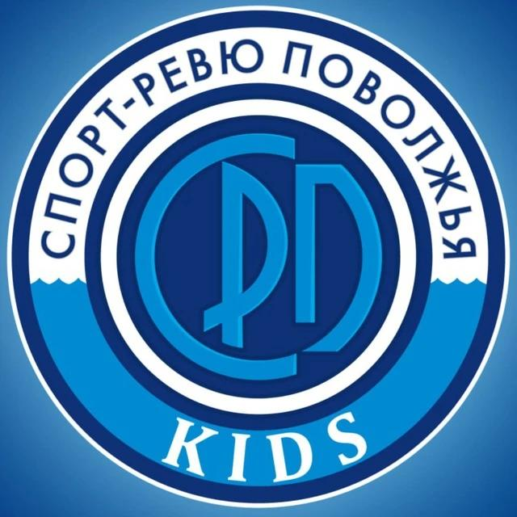

Летопись
Всё, что сохраняет футбольную историю команды:
- Матчи и турниры
- История команд и соперников
- Статистика игроков и достижения
- Номинации и рекорды

Одно приложение — два направления: «Летопись» для сохранения истории футбольных команд и «Спорт-Учёт» для управления футбольной школой. Общая регистрация, разные возможности в зависимости от роли пользователя.
Платформа находится в разработке. Установка пока недоступна.
«ФутСфера» объединяет два направления: открытый футбольный архив и инструменты для повседневной работы футбольных школ.
Всё, что сохраняет футбольную историю команды:
Рабочие инструменты тренеров и руководителей:
Родителям и болельщикам — просмотр футбольной истории команд. Тренерам и руководителям — работа с командами и инструментами учёта.
Одна учётная запись объединяет оба направления платформы. Информация о запуске будет опубликована отдельно.
После выхода «ФутСферы» здесь появится подтверждённая ссылка на установку.
АНО «Спорт-Ревю Поволжья» является официальным правообладателем приложения.
Проект создаётся для развития детского спорта и поддержки работы футбольных школ.
Предоставляются все закрывающие документы для бухгалтерии.